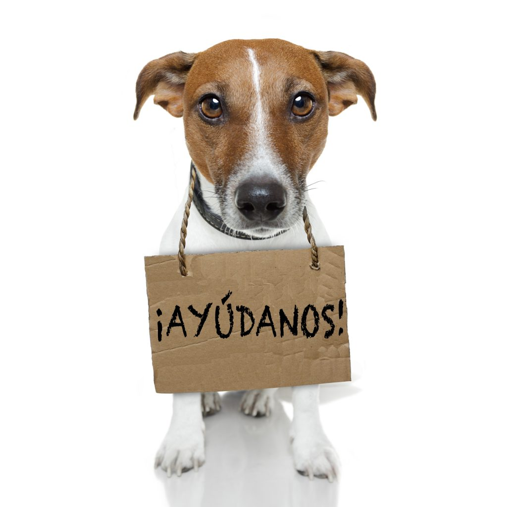

Inicio
Colabora
Adopcion
Requisitos
Ubicacion
REQUISITOS ADOPCION
Solicitá la adopción de perros recuperados del abandono. La solicitud es evaluada de acuerdo a las condiciones de la persona solicitante.
Ser mayor de 18 años.
Amar a las mascotas y poder dedicarle el tiempo que necesite.
Comprometerse con el cuidado y la salud del adoptado
Enviar foto/video del patio donde vivira la nueva mascota
tener un patio comodo para la nueva mascota
tener paciencia para el proceso de adaptacion a su nuevo hogar y familia
